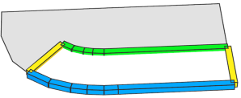
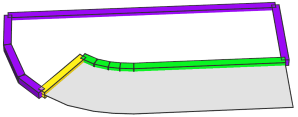
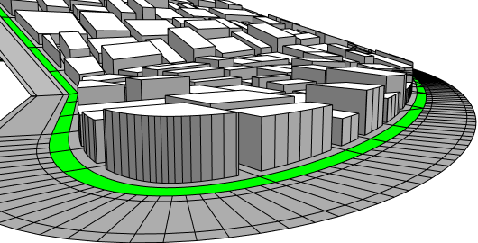
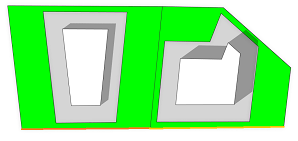
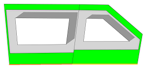
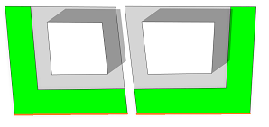

setback operation
distance float The setback distance.
distances float[] An array containing setback distances separately for each face edge.
uvSet float The uv set to use for uv-based selectors. Default is 0.
selector selector
| front, back, left, right, top, bottom, side | The edges' outwards normals in the polygon plane are analyzed by classifying their directions into the corresponding scope quadrants. |
| object.front, object.back, object.left, object.right, object.top, object.bottom, object.side | The edges' outwards normals in the polygon plane are analyzed by classifying their directions into the corresponding object coordinate system quadrants. |
| world.south, world.north, world.west, world.east, world.up, world.down, world.side | The edges' outwards normals in the polygon plane are analyzed by classifying their directions into the corresponding world coordinate system quadrants. |
| street.front, street.back, street.left, street.right, street.side | Edges adjacent to a street can be selected with the street.front selector, rear edges can be selected with the street.back selector, and edges in between front and back can be selected with the street.left and street.right selectors. street.side combines left and right edges. These selectors depend on the availability of the streetWidth attribute map; see Auto-generated street width attributes. If the attribute is not available, component selection falls back to the object.xxx selectors. |
| uv.left, uv.right, uv.bottom, uv.top | Selects edges based on their uv-coordinates. The outwards-pointing normal of each edge is analyzed to classify the edge with (left, right) being the negative and positive u-axis and (bottom, top) being the negative and positive v-axis. |
| uv.uMin, uv.uMax, uv.vMin, uv.vMax | Selects edges based on their uv-coordinates. An edge is selected if both endpoints have the geometry's minimal (uMin, vMin) or maximal (uMax, vMax) value of the respective uv-axis assigned. |
| all | Selects all edges. |
| isTagged(tagQuery) |
Selects tagged edges. See also this section for more details. Edges can also be selected based on the tags of adjacent faces.
|
| logical expression bool | Selects all edges for which the expression evaluates to true. User-defined functions as well as the above selectors can be used in the expression. |
| index float | Selects the index-th component (0-based). Too large and negative indices are modulo wrapped to a correct index. |
| remainder |
Selects the remainder of the polygon. The remainder depends on the selected edges but is always the same, independent of the position of the remainder selector in the selector-operator sequence!
|
operator The operator defines how the setback polygons are used to generate successor shapes. This also applies to shapes with more than one face.
| : | Each polygon is put into a new shape. |
| = | All polygons corresponding to the selector are combined into one new shape. |
operations A sequence of shape operations to execute on the newly created shape.
The setback operation selects a number of edges and sets them back by a given distance. This is somewhat similar to the polygon offset operation, with the difference that only a subset of the edges can be chosen for the setback. A common setback distance can be specified for all edges. Alternatively, a separate distance for each face edge can be specified by passing an array of setback distances instead of a single setback distance to the operation. The array must be in face-edge order, i.e. the first element is the distance of the first edge of the first face, the second element is the distance of the second edge of the first face, and so on.
Shared edges are considered separately for each face. If the array does not contain enough elements no setback is performed on the respective missing face edges. If the array contains more elements than the number of total face edges the respective setback distances are ignored. Such an array could be constructed using the comp function with the component selector set to fe (face edges). The setbackPerEdge operation provides a more convenient way to set individual setback distances without having to construct an array manually.
Component tags
All setback operations automatically apply semantic component tags to the resulting edge components:
Shape
| "setback.front" | Blue: original selected edges. |
| "setback.back" | Green: new setback edges. |
| "setback.side" | Yellow: side edges. |

setback(4) { front : Shape }
Remainder
| "setback.back" | Green: new setback edges. |
| "setback.side" | Yellow: side edges. |
| "setback.remainder" | Purple: original edges. |

setback(4) { front : NIL
| remainder : Remainder }
For more information on working with component tags, refer to:
Related
Examples
Setback on Street Front

LotInner --> Lot
Lot --> setback(5) { street.front = Garden
| remainder : Building }
Garden --> color("#00ff00")
Building --> offset(-3, inside)
extrude(world.up, rand(5, 15))
Individual distances

// (9)[1,6,1,6,1,6,1,6,1]
const dists = comp(fe) { all : case comp.index%2 == 0 : 1
else : 6 }
Lot --> setback(dists) { all = Garden
| remainder : Building }
An array of alternating distances is created using the comp function on a shape with 2 faces. Note that the distances in the array are applied in face-edge order. The first edge of each face is highlighted. The first distance is applied on the first edge of the first face (left) and the 5th distance is applied on the first edge of the second face (right).

// (9)[4,0,2,0.5,5,0.5,2,2,0]
const dists = comp(fe) { inside = 0
| front :
case comp.index == 0: 4
else : 5
| back = 2
| side = 0.5 }
Lot --> setback(dists) { all = Garden
| remainder : Building }
In this example the comp function is used with different selectors and operators.

Left --> shapeL(5, 5) { shape = Garden
| remainder : Building }
// (4)[5,5,0,0]
const dists = comp(fe) { front = 5 | right = 5 }
Right --> setback(dists) { all = Garden
| remainder : Building }
Left: A left-handed L shape using the shapeL operation. Right: A right-handed L shape shape using setback.